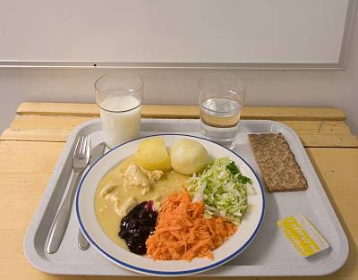

Koulun ruuat
Koulun ruuat on mahtavia vain joskus.
lasangea tänään
Kattila ja vuoka, täältä tulee ruoka. Lusikkaan kun tartun, suureksi mä vartun. Leivän syön, maidon juon, ruokarauhan muille suon.

Koulun ruuat on iha jees
- eka
- toka
- kolmas
- nälkä
- syömään